Palavras dele (prints 01 e 02, 08h31): "1- apareceu um aviso 2- cliquei nele, era para fazer isso?"
Destino: a gerente pergunta qual botão foi clicado e o que ele viu na beirada circulada.
Respostas dele sobre o que circulou: "um pedaçõ da pagina de fora" · "e a parte que o programa pintou".
Destino: - A gerente ampliou a beirada (prints 01b e 02b). Antes do clique (01b) a beirada está limpa, da cor do papel. Depois de "Desentortar aumentando a página" (02b) aparecem uma faixa clara pintada pelo programa, de outra cor que o papel, e um pedaço da beirada da página de fora; o aviso "A página ainda saiu deformada" não apareceu. - Defeito novo na Lista de bugs do PLANO-DEFINITIVO (10/11), nas duas cópias. Não é o conserto do cantinho (D-639), que vale para a página sem desentortar (print 01).
Palavras dele: "deixe anotado, hoje não temos como reconhecer essa partes que são marcas da folha ou folha meio dobrada ou manchas na folha que quando vão para o preto e branco fica essa mancha, o ocr está funcionando? porque era para ele preservar as letras e passar e deixar a folha branca, acho que ainda não chegamos no padrão do wikipedia."
Destino: Lista de bugs (10/11), ligada aos itens 1.4 e 1.5 da Fase 1 (não feitos). O OCR (docTR) hoje só acha as linhas do texto para endireitar; o Preto e branco não usa o OCR.
Palavras dele: "eu vim no endireitar" (círculo no canto de cima à esquerda, zoom 244%).
Destino: a gerente ampliou (05b). O canto de cima está fora da tela por causa do zoom, e a página está com inclinação 0,00 graus: sem giro não há cantinho. Explicado no chat: girar à mão (ex.: 1,5 grau com os botões de 0,1°) e olhar os quatro cantos com "ajustar à tela".
Palavras dele: "eu errei é internet arquive, sim é isso que temos que fazer, coloque um agente para fazer pesquisas de como eles fazem por favor." · sobre o cantinho: "usei ele, mas continua sem ver esse tal cantinho que você"
Destino:
- Agente pesquisador chamado (10/11): como o Internet Archive deixa a letra preservada e o papel branco, o que serve para
nós no Windows, licenças. Entrega em docs/pesquisa/fase1-1.4-como-o-internet-archive-faz.md e
relatorios/pesquisa-internet-archive-2026-11-10/.
- Cantinho: explicado no chat que, com o conserto, ele fica da cor do papel e não aparece; a página 18 está a 0,00 grau
(sem giro, sem cantinho). Oferecida uma prova antes/depois no modelo do girar (esperando o "sim").
Palavras dele: "acho que pode ser branca mesmo, só achei muito lento para fazer o carregamento quando eu giro, tinha que ser tão rápido quanto o photoshop, será que isso tem haver com a gente usar phyton e não outra engine para nosso programa? mudar a linguagem pode aumentar a velocidade do programa?"
Destino: - Cor do cantinho: "acho que pode ser branca" muda a D-639 (hoje: cor do papel). A gerente pergunta antes de mudar. - Lentidão do giro: Lista de bugs (10/11), para a Fase 5. Resposta sobre a linguagem no chat.
Palavras dele: "o jeito também como ele gira, olha só, não é que nem o photoshop que vira só a imagem dele, ele gira até a parte branca da area de trablho junto."
Destino: acrescentado ao item da lentidão do giro na Lista de bugs (10/11).
Palavras dele: "Não estou achando esse cantinho, por favor abre a tela do meu pc e faz o teste para eu ver" · "eu quero que seja rapido" · "você não viu minha resposta na central, pois eu respondi essa foto ai." · "a cor é diferente da cor do papel."
Destino:
- A gerente abriu relatorios/cunha-desentortar/destino18-direita-antes-depois.png (ramo obra) na tela dele. Não há
ferramenta de controlar o mouse nesta conversa.
- A resposta dele na Central (cantinho-outros-casos, 09/11 19h18, "Ainda não entendi": "esse teste é totalmente
inconslusivo para mim, não consigo ter visão clara do que o programa tentou fazer, ou de qual problema ele tentou
reslver.") não tinha sido lida. A pergunta vai ser refeita no modelo do girar (D-639 e os casos que ficaram brancos).
- "a cor é diferente da cor do papel": no "depois", o creme pintado é mais claro que o papel ao lado. Vai na pergunta
refeita, como defeito da D-639.
- "eu quero que seja rapido": sem saber se é o giro na tela ou o teste; perguntado no chat.
Palavras dele: "olha como fica ruim esse girar, não consigo ver direito o que está girando porque fica cortado então não consigo voltar direito para como estava."
Destino: acrescentado ao item do giro na Lista de bugs (10/11).
Palavras dele: "olha essa questão do canto não é urgente, pode deixar como branco por enquanto."
Destino: D-664 (fica como está, nada muda no programa) e Lista de espera (refazer a pergunta no modelo do girar).
Central cantinho-outros-casos respondida.
Correção dele sobre o print 08: "esse print você leu errado, o que eu quis mostrar é que quando eu estou com a pagina fora da area de trabalho e vou girar ela novamente para dentro, enquanto eu estou girando ela continua com aquela parte que estava para fora cortada, e fica dificil de visualizar o que realmente vai ficar dentro da area de trabalho."
Destino: texto do item corrigido na Lista de bugs (as duas cópias).
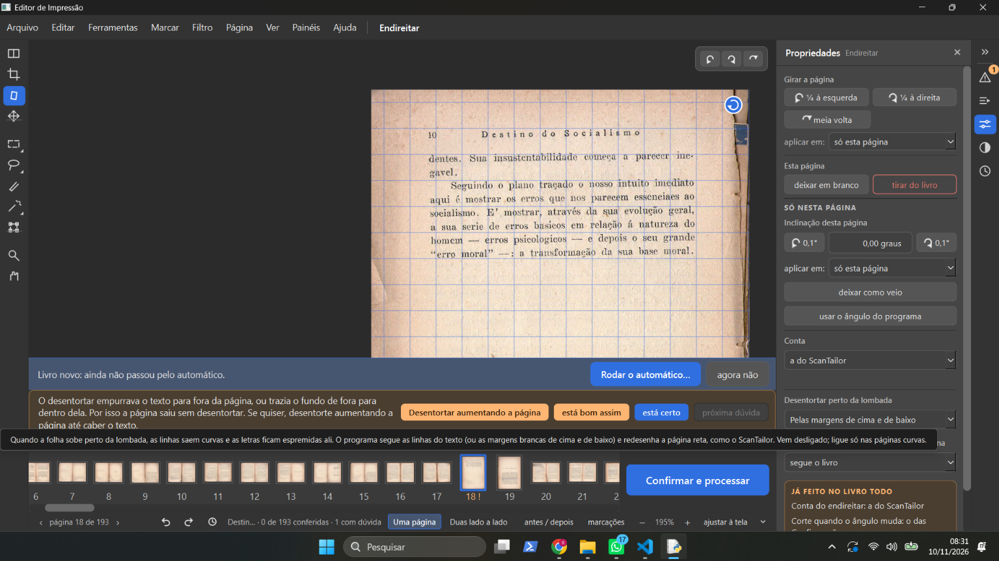
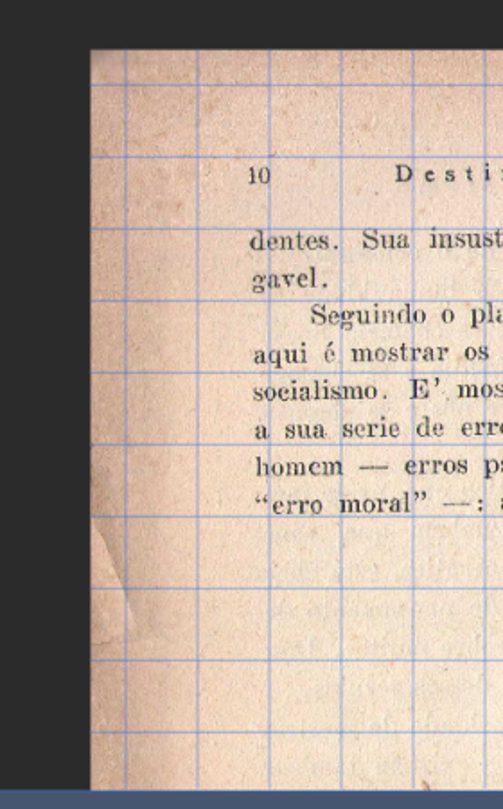
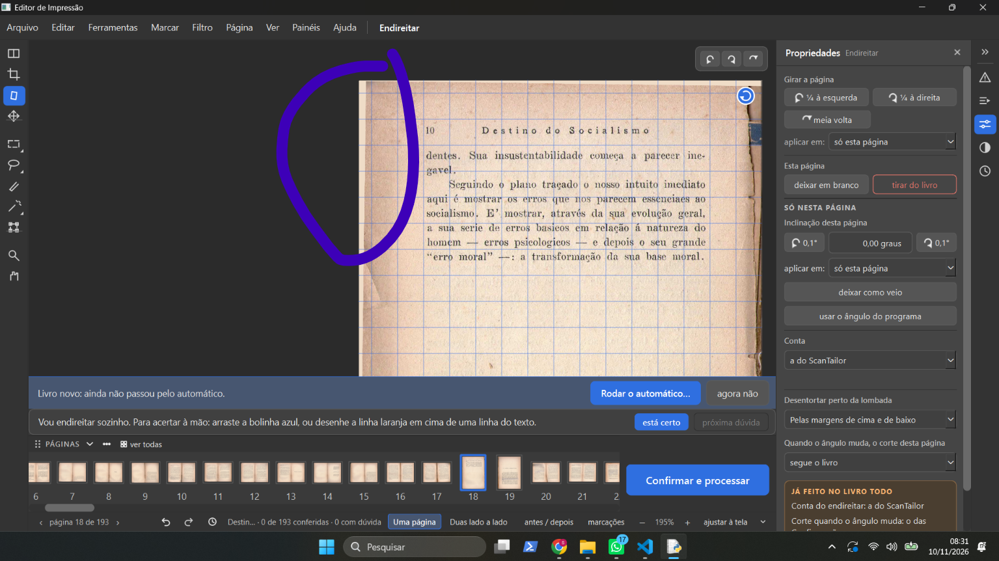
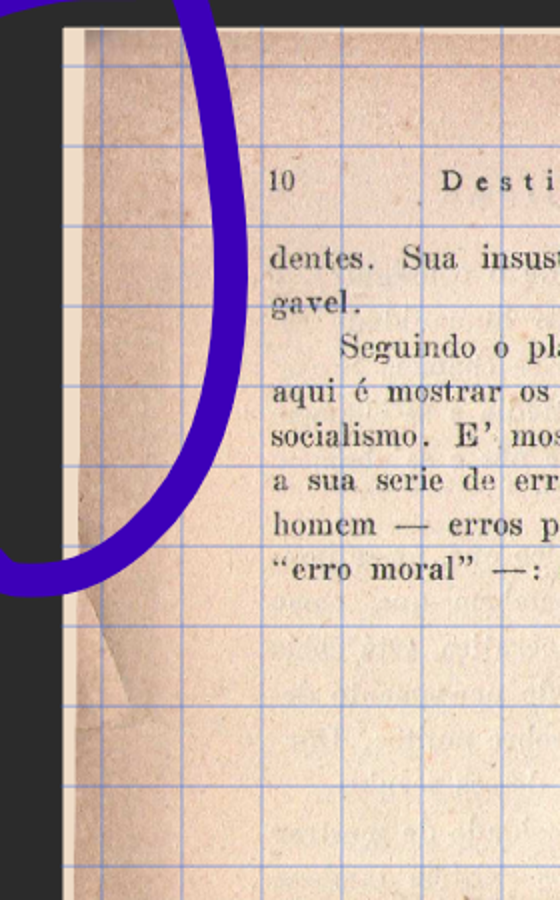
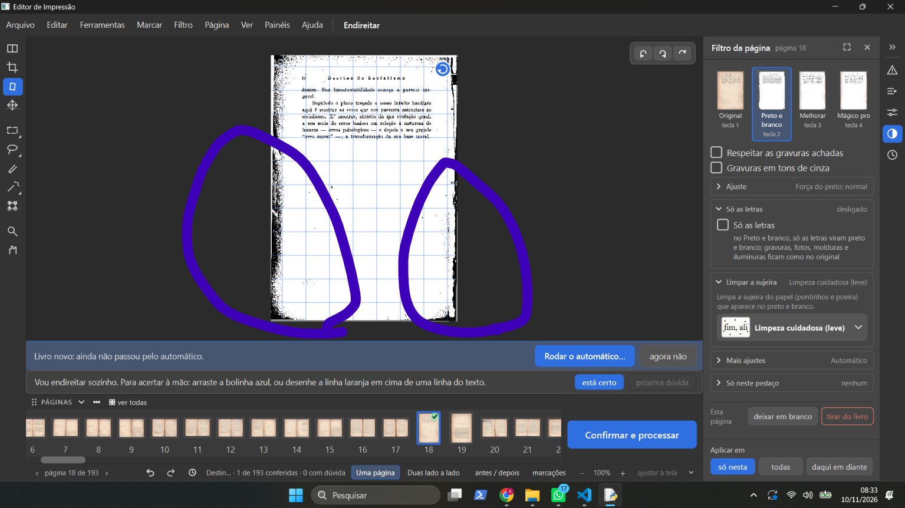
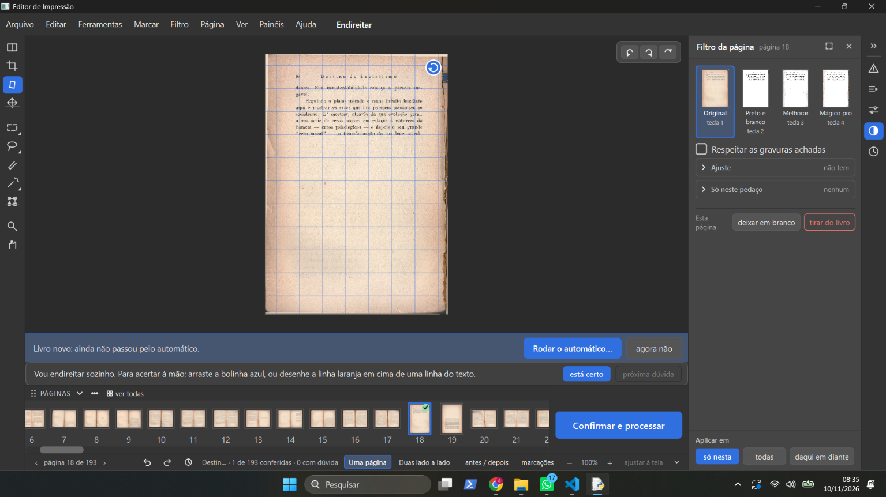
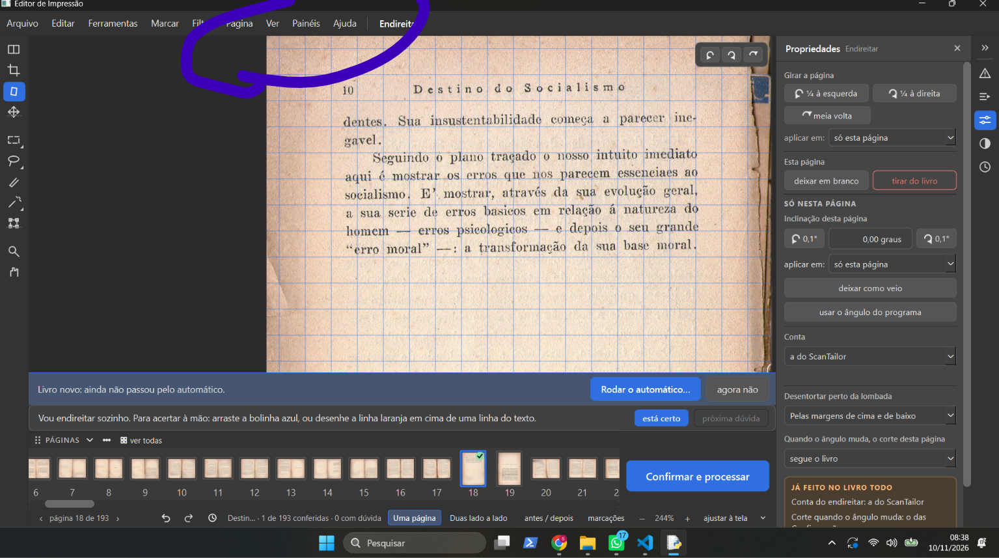
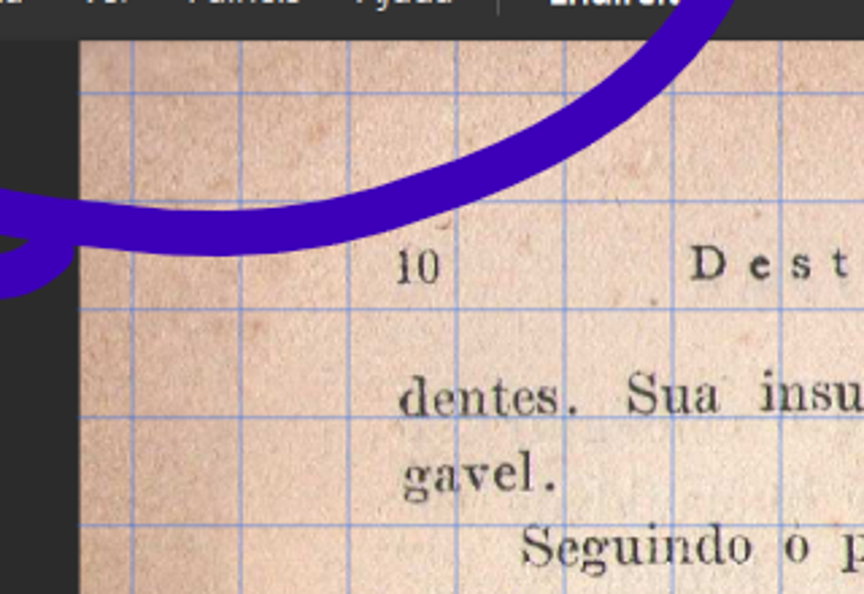
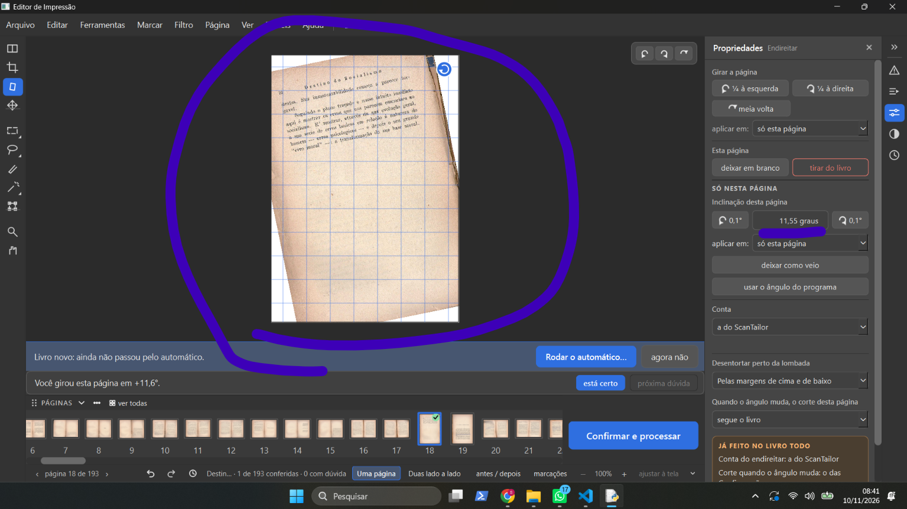
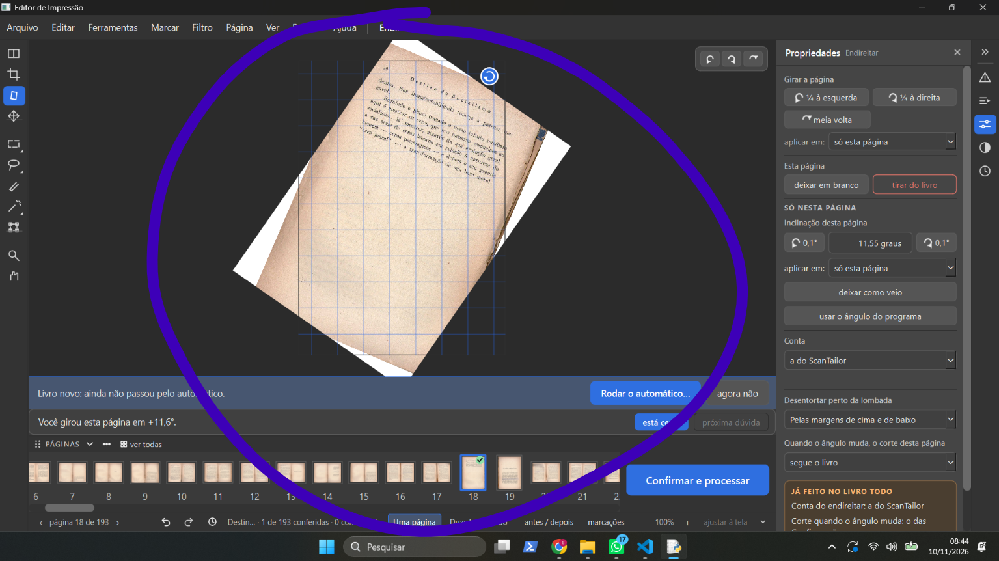
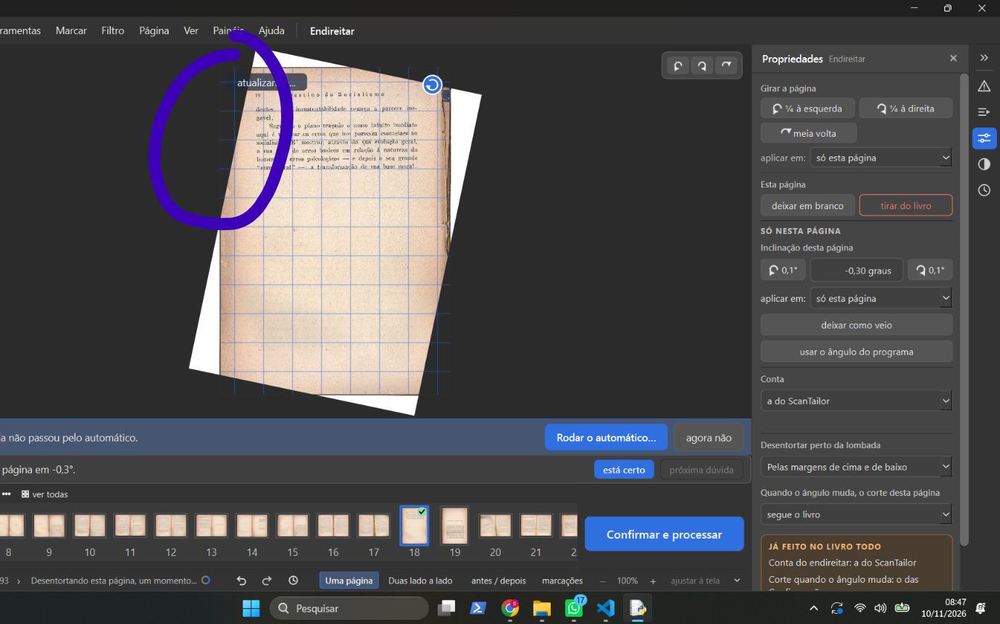
Editor de Impressão · gerado em 10/11/2026 às 08:51